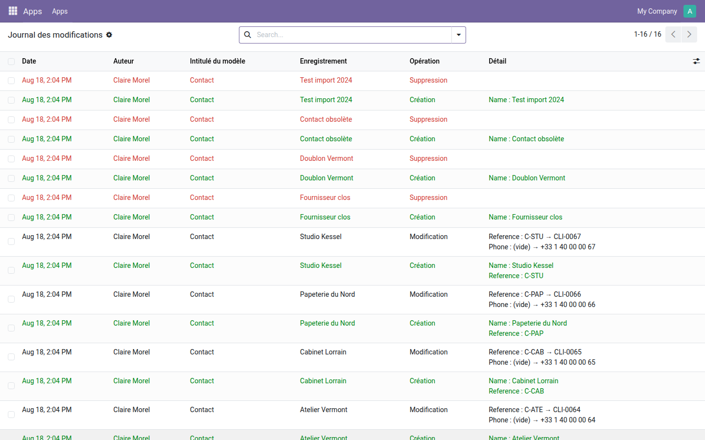
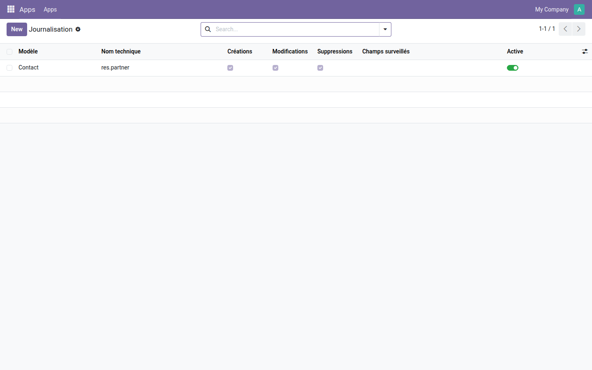

Qui a créé, modifié ou supprimé quoi — sur les modèles que vous désignez, sans écrire une ligne de code.
Le suivi natif d'Odoo ne couvre que les champs marqués « tracking » sur les modèles dotés d'un chatter. Un prix changé sur une fiche produit, un compte bancaire réécrit, une ligne effacée dans une table technique : rien de tout cela ne laisse de trace. Le jour où il faut comprendre ce qui s'est passé, il n'y a rien à lire.
Reference : C-STU → CLI-0067.Créations en vert, suppressions en rouge, modifications en clair avec l'ancienne et la nouvelle valeur — et l'auteur sur chaque ligne.

Créations, modifications, suppressions : chaque opération s'active séparément. Le champ « Champs surveillés » restreint la surveillance quand tout suivre serait trop bavard.

Journaliser dit ce qui s'est passé ; cloisonner empêche que cela se passe. la gamme OdooSkills compte une quinzaine de modules de cloisonnement — par équipe commerciale, par département, par projet, par journal comptable, par entrepôt. Catalogue complet : apps.odooskills.com.
Licence LGPL-3 — compatible Odoo 19.0 Community et Enterprise. Support : support@odooskills.com.